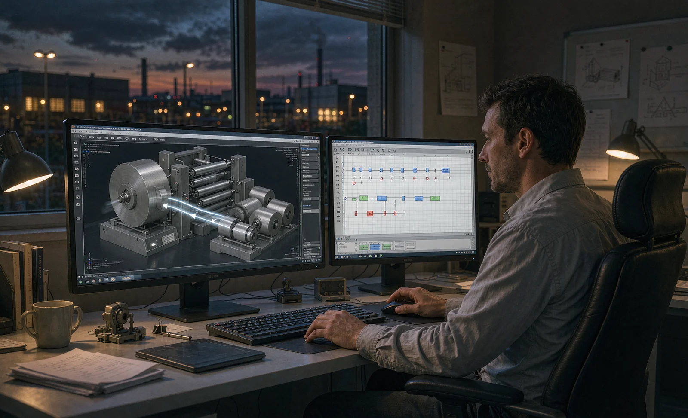
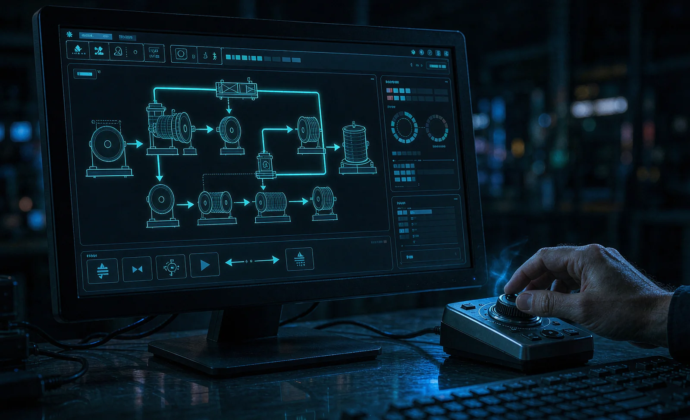

Published October 13, 2026 | By HDPTH Technical Editorial Team

The word twin now appears in most slitter rewinder proposals, usually beside the connectivity promises covered in our OPC UA guide. Sometimes it means a full control simulation; as often it means a 3D rendering that flatters the layout and proves nothing. The difference matters commercially, because a genuine twin changes the project schedule: software faults that would surface during on-site commissioning — the schedule risk mapped in our lead time and schedule guide — can instead be found at the supplier months earlier, at a desk, where they cost hours rather than production days.
Three levels of twin, and only two pay
Level one is the 3D model: geometry, access, maintenance clearances and layout fit. It is useful for planning — the same questions our line layout guide addresses — but it contains no behavior, so it cannot fail a sequence test. Level two is the control twin: your machine’s actual PLC and drive logic running against a simulated plant of sensors, motors and valves. Threading sequences, splice detection, turret doffs, web break responses and alarm chains execute virtually, and your engineers can witness them remotely during the build. Level three adds physics — tension, inertia, acceleration behavior — which mainly benefits line-level projects and unusual webs. Ask which level is quoted: level one is a rendering, level two shortens commissioning, level three is for special cases. The distinction is the same discipline as asking what a ‘smart’ feature actually does, per our MES integration guide.
What virtual commissioning changes
Virtual commissioning moves logic verification upstream. Sequences and interlocks are proven against the model during machine assembly; the HMI screens and alarm philosophy are reviewed with operators before there is a machine to stand beside; and changes found late — a missing interlock, an awkward changeover flow — cost an edit rather than a rework of wiring or mechanics. By the time the machine reaches the factory acceptance test, the software is old news and the FAT can concentrate on what only hardware can show: tension behavior on your web, edge quality, roll geometry, vibration and safety device response, exactly the criteria in our FAT checklist guide. Buyers consistently report that the twin’s biggest financial return is not the model itself but the shortening of the site phase that follows it — fewer engineer-days at your plant, faster ramp to sellable rolls, and a startup that follows the installation plan from our rigging and installation guide without software surprises.

Training on a machine that has not shipped
The twin’s most overlooked benefit arrives after commissioning. Because the control twin runs the real HMI, operators can thread, splice, change settings and recover from faults on screen — without consuming web, risking a crash, or booking machine time. Used before delivery, it compresses the learning curve described in our operator training guide; used after go-live, it becomes the sandbox for new products, new recipes and refresher training. Plants with high staff turnover get particular value: a training twin turns the machine knowledge that otherwise lives in two senior operators into a repeatable course, which supports the recipe-driven operations covered in our recipe management guide. When you size the training plan, ask the supplier to include twin-based hours in the documentation and training scope, so the simulator sessions are deliverables with named attendees rather than a goodwill demo.
What to ask for and what to contract
Five questions sort real twins from renders: Does it run the production PLC code or a mock-up? Which sequences are covered — threading, splicing, doffing, fault recovery? Is there a physics layer or only fixed animation? Can our engineers access it remotely during the project? And is the model updated when the machine changes, including after retrofits, in line with the change discipline in our condition monitoring guide? Then contract what matters: use rights for your team after delivery, an update obligation when machine software changes, a defined format or interface so the twin is not locked to one laptop, and a schedule milestone that shows virtual commissioning in the project plan, alongside the validation documentation discussed in our IQ OQ documentation guide. A twin you cannot access, update or train on is a brochure with moving parts. Budget realistic effort on your side too: a twin that is watched rather than operated delivers little, so name an engineer who attends the virtual commissioning sessions and signs off the sequence demonstrations.
Evaluating twin offers in your quotations?
Ask HDPTH what our virtual commissioning package includes: the sequences it covers, how your team accesses it during build and after delivery, and how it shortens your FAT and site schedule. We will show the twin running real machine code, not a video.
Submit Your Project InquiryFrequently asked questions
What is a digital twin in slitter rewinder terms?
It is a software model of the machine that runs before and alongside the hardware, at one of three levels. A 3D mechanical model shows geometry, access and maintenance clearances. A control-level twin runs the real PLC or drive code against simulated I/O, so sequences — threading, splicing, turret doffs, fault stops — execute virtually. A full simulation twin adds physics: tension, inertia, acceleration. Many suppliers market the first level as a twin; only the second and third shorten commissioning.
Does virtual commissioning replace the factory acceptance test?
No. Virtual commissioning proves the logic: sequences, interlocks, HMI behavior and alarm handling can be verified before hardware exists, which removes weeks of on-site debugging. It cannot prove what a physical FAT proves — real web behavior, tension quality, edge class, roll hardness, vibration, safety device response. The right structure uses the twin to arrive at the FAT with logic already proven, so the acceptance test spends its days on material-dependent criteria instead of chasing software faults.
Is a digital twin worth it for a single machine?
Often, but the payoff shifts with the purchase. For one standard machine, the main value is risk reduction: sequence problems surface months earlier, and site commissioning shortens from weeks to days. For a multi-machine program or a line, the twin scales better — variants can be validated against one model, and operator training before delivery compounds the benefit. Ask each supplier what portion of the twin cost they already amortize across projects; mature suppliers offer it at a fraction of first-project cost.
What questions separate a real twin from a marketing animation?
Ask five things. Does the twin run the actual production PLC code, or a mock-up? Which sequences are covered — threading, splicing, doffing, fault handling? Is the model connected to a physics layer or to fixed animations? Can your engineers operate it remotely during the project? And is the model updated when the machine changes? Suppliers who answer with the words ‘rendering’ or ‘visualization’ are selling a video, and nothing in it shortens commissioning.
Can the twin be used for operator training?
Yes, and this is where twins repay themselves fastest in daily operation. A control-level twin with the real HMI lets operators thread, splice, doff and recover from faults on screen, without web waste or machine risk, before the equipment arrives or between shifts on site. Training on the twin compresses the learning curve that our operator training guide describes, and it gives you a safe way to retrain staff after product or recipe changes without scheduling production downtime.
Who owns the digital twin model after delivery?
Negotiate it explicitly. At minimum you want the right to use the twin with your machine, access to model updates after retrofits, and the ability to hand it to a third party for training or line extension. Some suppliers retain the model and sell simulation services against it; others deliver the full project. Ownership determines whether the twin stays useful through later upgrades, so put use rights, update obligations and format terms in the contract, in the same clause family as your software and data provisions.